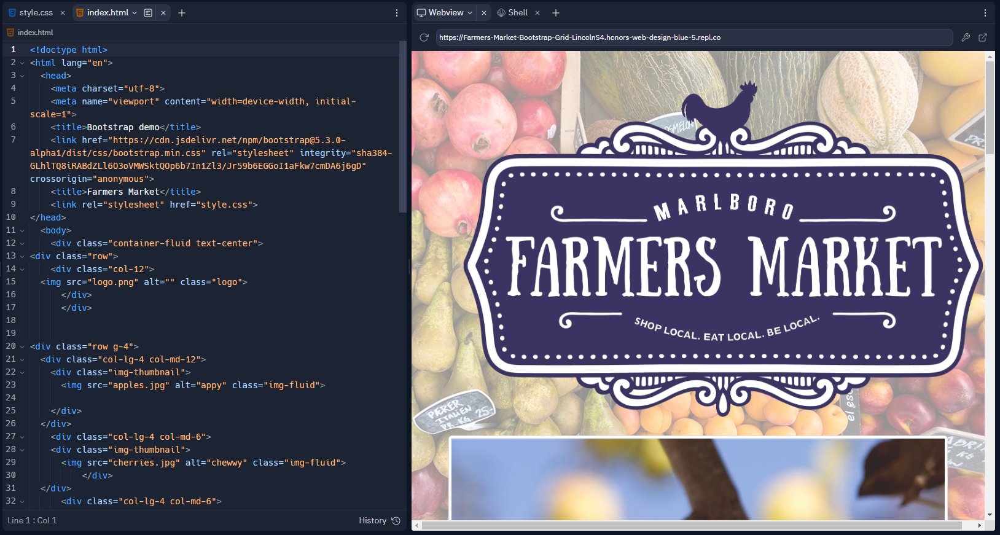
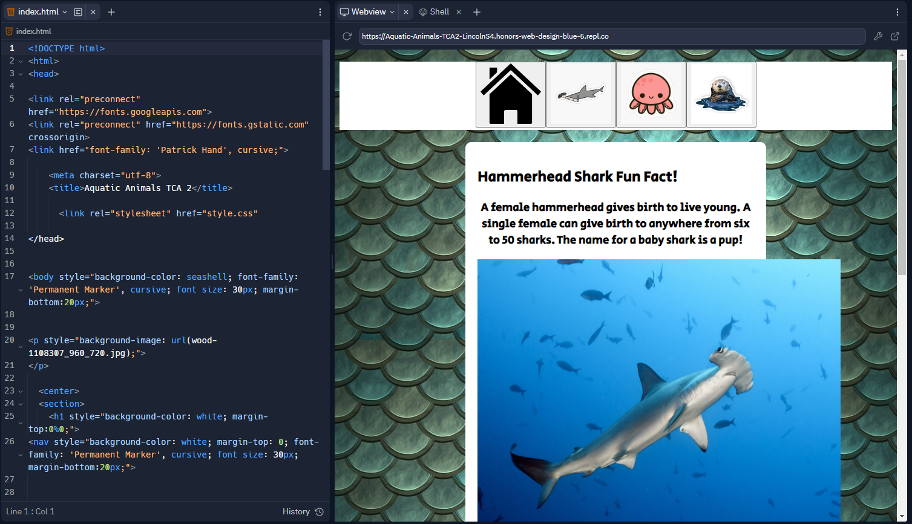

Jim Henson Tribute
We were all assigned to work in groups on a tribute page for a famous passed designer. We chose, creator of the Muppets. Jim Henson.

Here!
Farmers Market
To teach the class how to begin to use bootstrap, we created a website for our fictitious farmers market.

Here!
Aquatic Animals
For a TCA grade, we all had to choose three aquatic animals to write reports on and create a digital, website presentation for.